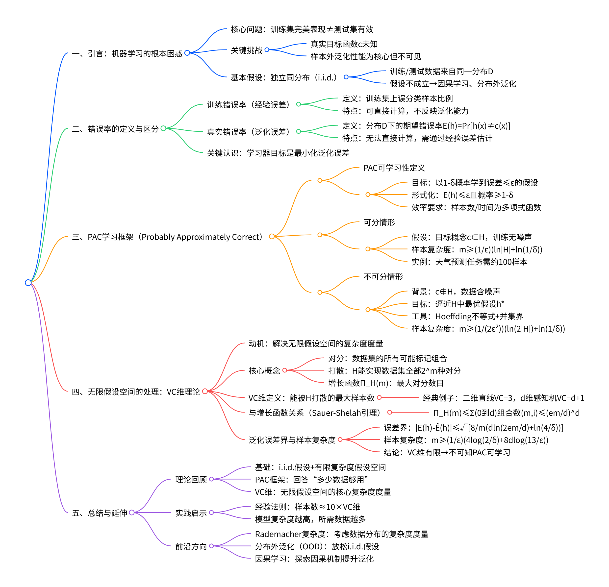

计算学习理论知识大纲¶
思维导图¶

一、引言：机器学习的根本困惑¶
核心问题¶
- 模型在训练集上表现完美，为何能相信其在未知测试集上也有效？
- 在机器学习实践中，我们常常遇到这样一个问题：一个模型可能在训练数据集上表现出色，能够完美预测样本内的数据。然而，这种完美预测对于样本外的数据（即未见过的测试集）几乎没有帮助。
- 真正的学习目标是让模型能够在新的、未知的数据上也表现良好，而不仅仅是对已知训练数据的良好拟合。
关键挑战¶
- 真实目标函数 \(c\) 未知：
- 在实际应用中，我们试图通过有限的样本数据去逼近一个未知的真实目标函数 \(c\)。然而，这个真实的目标函数 \(c\) 是不可知的，因此我们无法直接验证模型是否准确地学到了这一函数。
- 样本外（泛化）性能才是衡量学习成功与否的标准，但样本外数据不可见：
- 学习算法的表现应当基于它如何处理之前未曾见过的数据，即所谓的泛化能力。但是，由于这些未来数据尚未出现或不可预见，评估这种泛化能力变得非常困难。
- 这种情况下，可能会产生疑问：如果仅依赖于训练集上的表现来调整模型参数，那么这样的过程是否可靠？机器学习是否仅仅是一个基于有限信息进行猜测的游戏？
基本假设（前提条件）¶
- 独立同分布（i.i.d.）：训练数据与测试数据均来自同一未知分布 \(\mathcal{D}\)：
- 为了使机器学习方法有效，通常假定所有用于训练和测试的数据都来自于同一个概率分布 \(\mathcal{D}\)。这意味着无论是训练集还是测试集中的任何一对特征向量及其标签 \((x, y)\) 都遵循相同的生成机制。
-
如果这个假设不成立——例如，训练集的数据分布与测试集的数据分布不同（分布偏移），那么基于训练集构建的模型将难以在测试集上保持良好的性能，从而导致传统机器学习理论失效。
-
若此假设不成立（如分布偏移），传统机器学习理论失效 → 引出因果学习、分布外泛化等新方向：
- 当面对非平稳环境或者存在分布变化的情况时，传统的基于独立同分布假设的方法可能不再适用。这就促使了对更高级概念的研究，比如因果学习，它旨在理解变量间因果关系而非仅仅是统计关联；以及分布外泛化技术，致力于提高模型在不同分布下的适应性和稳定性。这些新兴领域为解决上述挑战提供了新的视角和技术手段。
二、错误率的定义与区分¶
训练错误率（经验误差）¶
- 定义：在训练集上被假设 \(h\) 误分类的样本比例。
-
这是指，在给定的训练数据集 \(\mathcal{D}_{\text{train}}\) 上，模型 \(h\) 对于每个输入 \(x_i\) 的预测标签与真实标签 \(y_i\) 不一致的比例。形式化表达为： [ \hat{E}(h) = \frac{1}{|\mathcal{D}{\text{train}}|} \sum(h(x) \neq y) ] 其中，}_{\text{train}}} \mathbb{I\(\mathbb{I}\) 是指示函数，当条件成立时返回1，否则返回0。
-
特点：这是可以直接计算得到的量，因为它完全基于训练集中的数据点来评估模型的表现。然而，它并不能直接反映模型在未见过的数据上的表现能力。
真实错误率（泛化误差）¶
- 定义：\(E(h) = \Pr_{x \sim \mathcal{D}}[h(x) \neq c(x)]\)，即在分布 \(\mathcal{D}\) 下的期望错误率。
-
这个概念衡量的是模型 \(h\) 在整个潜在的数据分布 \(\mathcal{D}\) 上的平均错误率，而不仅仅是训练集中包含的数据点。换句话说，它是模型应用于从同一分布中随机抽取的新实例时预期会出现的错误概率。
-
解释：由于实际的目标函数 \(c\) 是未知的，并且我们无法访问整个数据分布 \(\mathcal{D}\)，因此直接计算真实的泛化误差是不可能的。相反，我们依赖于训练集上的经验误差作为泛化误差的一个估计值。
关键认识¶
- 学习器只能观测训练误差，但目标是最小化泛化误差：
- 尽管我们可以精确地测量训练集上的经验误差 \(\hat{E}(h)\)，但这并不足以保证模型在新的、未见过的数据上有良好的表现。这是因为训练误差可能受到过拟合的影响——即模型过度适应了训练数据的特点，以至于在新数据上的表现较差。
- 因此，机器学习的核心挑战之一是如何设计算法，使得它们能够在有限的训练数据基础上构建出具有良好泛化能力的模型。这就需要通过理论分析（如PAC可学习性理论）、交叉验证等方法来估计并尽量减小泛化误差。
此外，值得注意的是，不同的模型或假设可能会有不同的训练误差和泛化误差。例如，在PPT中提到的例子中，即使是简单的线性模型或神经网络也可能因为参数设置不当而导致过拟合或欠拟合现象，从而影响最终的泛化性能。理解这些概念有助于更深入地探讨如何选择合适的模型复杂度以及调整超参数以优化模型的整体性能。
三、PAC学习框架（Probably Approximately Correct）¶
PAC学习理论是计算学习理论的核心，旨在从理论上回答“机器学习是否可能”以及“在什么条件下可能”的问题。它通过引入概率与近似的思想，为学习算法的可靠性提供了形式化保证。
1. PAC可学习性定义¶
- 目标：以高概率（\(1 - \delta\)）学到一个近似正确（误差 \(\leq \varepsilon\)）的假设。
- “Probably” 指的是以至少 \(1 - \delta\) 的置信度（\(\delta\) 为失败概率）；
-
“Approximately Correct” 指的是所学假设 \(h\) 的泛化误差 \(E(h)\) 不超过预设的容忍误差 \(\varepsilon\)。
-
形式化定义（基于PPT第15页）： 考虑实例空间 \(X\) 上的概念类 \(\mathcal{C}\)，学习器 \(L\) 使用假设空间 \(\mathcal{H}\)。若对任意目标概念 \(c \in \mathcal{C}\)、任意数据分布 \(\mathcal{D}\)、任意 \(\varepsilon \in (0, 1/2)\) 和 \(\delta \in (0, 1/2)\)，学习器 \(L\) 都能以至少 \(1 - \delta\) 的概率输出一个假设 \(h \in \mathcal{H}\)，使得其真实错误率满足： $$ E(h) = \Pr_{x \sim \mathcal{D}}[h(x) \neq c(x)] \leq \varepsilon, $$ 则称概念类 \(\mathcal{C}\) 在假设空间 \(\mathcal{H}\) 下是PAC可学习的。
-
计算效率要求：
- 学习所需的时间（以及样本数 \(m\)）必须是以下参数的多项式函数： $$ \text{poly}\left( \frac{1}{\varepsilon}, \frac{1}{\delta}, N, \text{size}(c) \right), $$ 其中 \(N\) 是实例描述长度，\(\text{size}(c)\) 是目标概念的表示大小。
- PPT特别指出：“时间复杂度与样本复杂度密切相关”，因此后续重点分析样本复杂度。
2. 可分情形（Realizable Case）¶
- 基本假设：
- 目标概念 \(c\) 属于假设空间 \(\mathcal{H}\)，即存在某个 \(h \in \mathcal{H}\) 使得 \(E(h) = 0\)。
-
训练数据无噪声，且存在一个假设能完美拟合所有训练样本。
-
核心问题：
-
给定有限假设空间 \(|\mathcal{H}| < \infty\)，需要多少样本 \(m\) 才能保证：
若学习器输出一个在训练集上零误差的假设 \(h\)，则该 \(h\) 的泛化误差 \(E(h) \leq \varepsilon\) 的概率至少为 \(1 - \delta\)？ -
推导思路（PPT 第17–18页）：
- 若某假设 \(h\) 满足 \(E(h) > \varepsilon\)，则它在单个随机样本上预测正确的概率 \(< 1 - \varepsilon\)；
- 因此，在 \(m\) 个独立样本上全部预测正确的概率 \(< (1 - \varepsilon)^m \leq e^{-\varepsilon m}\)；
- 假设空间中有 \(|\mathcal{H}|\) 个假设，其中“坏假设”（即 \(E(h) > \varepsilon\) 但在训练集上全对）的总概率不超过： $$ |\mathcal{H}| \cdot e^{-\varepsilon m} $$
- 要求该概率 \(\leq \delta\)，即： $$ |\mathcal{H}| e^{-\varepsilon m} \leq \delta $$
-
解得样本复杂度下界：
-
样本复杂度（有限 \(\mathcal{H}\)）： $$ m \geq \frac{1}{\varepsilon} \left( \ln |\mathcal{H}| + \ln \frac{1}{\delta} \right) $$
-
实例说明（PPT 第21页）：
- 在天气预测任务中，假设空间大小 \(|\mathcal{H}| = 973\)；
- 设 \(\varepsilon = 0.1\), \(\delta = 0.05\)（即95%置信度）；
- 则所需样本数 \(m \geq \frac{1}{0.1} (\ln 973 + \ln 20) \approx 100\)。
3. 不可分情形（Agnostic Case）¶
- 现实背景：
- 实际问题中，目标概念 \(c\) 往往不在假设空间 \(\mathcal{H}\) 中（例如模型能力不足或数据含噪声）；
-
此时，任何 \(h \in \mathcal{H}\) 都会有非零训练误差。
-
学习目标转变：
- 不再追求逼近未知的 \(c\)，而是逼近假设空间中最优假设 \(h^* = \arg\min_{h' \in \mathcal{H}} E(h')\)；
-
要求所学假设 \(h\) 满足： $$ E(h) \leq \min_{h' \in \mathcal{H}} E(h') + \varepsilon $$
-
不可知PAC可学习性定义（PPT 第26–27页）：
-
若存在学习算法 \(L\)，对任意分布 \(\mathcal{D}\)、任意 \(\varepsilon, \delta \in (0,1)\)，当样本数 \(m \geq \text{poly}(1/\varepsilon, 1/\delta, \dots)\) 时， $$ \Pr\left[ E(h) - \min_{h' \in \mathcal{H}} E(h') \leq \varepsilon \right] \geq 1 - \delta, $$ 则称 \(\mathcal{H}\) 是不可知PAC可学习的。
-
关键工具：Hoeffding不等式
- 对任意固定假设 \(h\)，其经验误差 \(\hat{E}(h)\) 与真实误差 \(E(h)\) 满足： $$ \Pr\left[ |\hat{E}(h) - E(h)| \geq \varepsilon \right] \leq 2 \exp(-2 \varepsilon^2 m) $$
-
但需对所有 \(h \in \mathcal{H}\) 同时成立 → 使用并集界（Union Bound）。
-
推导过程（PPT 第25页）：
- 对所有 \(h \in \mathcal{H}\)，有： $$ \Pr\left[ \exists h \in \mathcal{H}: |\hat{E}(h) - E(h)| \geq \varepsilon \right] \leq |\mathcal{H}| \cdot 2 \exp(-2 \varepsilon^2 m) $$
-
令该概率 \(\leq \delta\)，解得：
-
样本复杂度（有限 \(\mathcal{H}\)）： $$ m \geq \frac{1}{2\varepsilon^2} \left( \ln (2|\mathcal{H}|) + \ln \frac{1}{\delta} \right) $$
-
对比可分情形：
- 不可分情形的样本复杂度依赖于 \(\varepsilon^2\)（而非 \(\varepsilon\)），因此对精度要求更高时，所需样本数增长更快；
-
这反映了现实场景中因噪声或模型限制带来的额外学习难度。
-
局限性与启示（PPT 第30页）：
- 上述界依赖于 \(|\mathcal{H}|\)，但许多实际模型（如线性分类器、神经网络）具有无限假设空间；
- 这促使引入VC维等更精细的复杂度度量，以处理无限假设空间的情形。
综上，PAC学习框架通过区分“可分”与“不可分”两种情形，为机器学习的可行性提供了严格的理论基础，并清晰揭示了误差容忍度 \(\varepsilon\)、置信水平 \(1-\delta\)、假设空间复杂度与所需样本数之间的定量关系。
四、无限假设空间的处理：VC维理论¶
1. 动机¶
- 问题背景：
- 在实际应用中，许多常用的模型（如线性分类器、神经网络等）具有无限大的假设空间（即 \(|\mathcal{H}| \to \infty\)）。例如，在二维平面上使用直线进行二分类时，存在无数条可能的直线。
-
前述基于有限假设空间的PAC学习理论中的样本复杂度界依赖于 \(|\mathcal{H}|\)，当 \(|\mathcal{H}|\) 为无穷大时，这些界限变得无意义或无法直接应用。
-
解决思路：
- 需要一种新的度量方式来衡量假设空间的有效复杂度。这种度量应能反映假设空间对数据集的区分能力，而不是简单地计数假设的数量。
- 引入了VC维（Vapnik-Chervonenkis Dimension），它提供了一种与假设空间“有效复杂度”相关的度量方法。
2. 核心概念¶
- 对分（Dichotomy）：
-
对于给定的数据集 \(D = \{x_1, x_2, ..., x_m\}\)，假设空间 \(\mathcal{H}\) 中每个假设 \(h\) 可以将 \(D\) 中的样本标记为两类（比如+1和-1）。所有可能的不同标记组合称为对分。
-
打散（Shattering）：
- 如果假设空间 \(\mathcal{H}\) 能够实现数据集 \(D\) 上的所有 \(2^m\) 种不同的对分，则称 \(\mathcal{H}\) 打散了 \(D\)。
-
打散意味着对于任意一种标签分配方案，总能找到一个假设 \(h \in \mathcal{H}\) 来正确分类该数据集。
-
增长函数（Growth Function）\(\Pi_{\mathcal{H}}(m)\)：
- 定义为假设空间 \(\mathcal{H}\) 对任意大小为 \(m\) 的数据集所能产生的最大对分数目。 $$ \Pi_{\mathcal{H}}(m) = \max_{x_1,...,x_m \in X} |{(h(x_1),...,h(x_m)) : h \in \mathcal{H}}| $$
- 性质：显然有 \(\Pi_{\mathcal{H}}(m) \leq 2^m\)；但对于某些复杂的假设空间，即使其是无限的，\(\Pi_{\mathcal{H}}(m)\) 也可能远小于 \(2^m\)。
3. VC维（Vapnik-Chervonenkis Dimension）¶
- 定义：
- 假设空间 \(\mathcal{H}\) 的VC维是指能够被 \(\mathcal{H}\) 打散的最大样本数。 $$ \text{VC}(\mathcal{H}) = \max { m : \Pi_{\mathcal{H}}(m) = 2^m } $$
-
换句话说，如果存在某个大小为 \(d\) 的数据集可以被 \(\mathcal{H}\) 打散，但不存在任何大小为 \(d+1\) 的数据集可以被 \(\mathcal{H}\) 打散，则 \(\text{VC}(\mathcal{H}) = d\)。
-
经典例子：
- 二维平面上的线性分类器（直线）：\(\text{VC} = 3\)。因为任意三个点（非共线）都可以通过一条直线分开成任意两种类别组合，但四个点则不一定能做到这一点。
- 实数轴上的区间：\(\text{VC} = 2\)。两个点可以通过选择适当的区间覆盖其中一个而不覆盖另一个，但三个点的情况就无法做到所有可能的划分。
- \(d\) 维感知机：\(\text{VC} = d + 1\)。这表明随着维度增加，模型的表达能力增强，但也带来了更高的过拟合风险。
4. VC维与增长函数的关系¶
- Sauer-Shelah引理：
- 当假设空间 \(\mathcal{H}\) 的VC维为 \(d\) 时，其增长函数满足如下不等式： $$ \Pi_{\mathcal{H}}(m) \leq \sum_{i=0}^{d} \binom{m}{i} \leq \left( \frac{em}{d} \right)^d $$
- 这个结果说明，尽管假设空间可能是无限的，但如果它的VC维有限，则其增长函数的增长速度受到限制，不会超过多项式级别。
5. 基于VC维的泛化误差界¶
- 泛化误差界：
- 对于任意假设 \(h \in \mathcal{H}\)，在独立同分布的数据集上，经验误差 \(\hat{E}(h)\) 与真实误差 \(E(h)\) 之间的差距可以用以下公式估计： $$ |E(h) - \hat{E}(h)| \leq \sqrt{ \frac{8}{m} \left( d \ln \frac{2em}{d} + \ln \frac{4}{\delta} \right) } $$
-
这里 \(d = \text{VC}(\mathcal{H})\) 是假设空间的VC维，\(m\) 是样本数量，\(\delta\) 是置信水平参数。
-
样本复杂度（不可知PAC）：
- 为了确保上述误差界成立的概率至少为 \(1 - \delta\)，所需的最小样本数 \(m\) 应满足： $$ m \geq \frac{1}{\varepsilon} \left( 4 \log \frac{2}{\delta} + 8d \log \frac{13}{\varepsilon} \right) $$
-
这表明，随着允许的误差 \(\varepsilon\) 减小或者置信度 \(1 - \delta\) 提高，所需样本数会相应增加。
-
重要结论：
- 任何VC维有限的假设空间都是（不可知）PAC可学习的。这意味着只要假设空间的VC维是有限的，就可以找到足够多的训练样本来保证学习算法输出的假设具有良好的泛化性能。
综上所述，VC维理论不仅解决了无限假设空间下的学习问题，还提供了关于模型复杂度与泛化能力之间关系的重要见解。这对于理解和设计有效的机器学习算法至关重要。
五、总结与延伸¶
1. 理论回顾¶
- 机器学习的可靠性建立在 i.i.d. 假设 + 有限复杂度假设空间基础上：
- 独立同分布（i.i.d.）假设：训练数据和测试数据均来自同一未知的概率分布 \(\mathcal{D}\)。这一假设是传统机器学习理论的基础，如果违反此假设，模型在新数据上的表现可能不佳。
-
有限复杂度假设空间：通过限制假设空间的大小或复杂度（例如使用VC维），可以确保模型不会过度拟合训练数据，并且能够在未见过的数据上保持良好的泛化性能。
-
PAC框架提供了“多少数据够用”的理论答案：
-
PAC（Probably Approximately Correct）学习框架为确定所需的最小样本数量提供了一个理论框架，以保证所学模型能够以高概率达到一定的准确性水平。它区分了可分情形和不可分情形下的样本复杂度计算方法，强调了误差容忍度 \(\varepsilon\) 和置信水平 \(1-\delta\) 对所需样本数的影响。
-
VC维是衡量模型复杂度的核心工具，适用于无限假设空间：
- VC维（Vapnik-Chervonenkis Dimension）用于量化假设空间的有效复杂度，即使对于无限假设空间也适用。通过VC维，可以推导出关于泛化误差的界限，并据此估计实现特定泛化性能所需的样本量。Sauer-Shelah引理进一步表明，增长函数的增长速度受限于VC维，这为处理无限假设空间提供了理论支持。
2. 实践启示¶
- 经验法则：所需样本数约为 \(10 \times \text{VC维}\)：
-
在实践中，为了获得可靠的模型性能，通常建议使用的样本数量至少为VC维的十倍。这有助于确保模型不仅能在训练集上表现良好，还能在新的、未见过的数据上保持较好的泛化能力。
-
过拟合风险：模型复杂度（VC维）越高，所需数据越多：
- 高VC维意味着模型具有更强的表达能力和更高的复杂度，但同时也增加了过拟合的风险。因此，随着模型复杂度的增加，需要更多的训练数据来避免过拟合，确保模型能够准确地从数据中学习到有用的信息而非噪声。
3. 前沿方向¶
- Rademacher复杂度：另一种复杂度度量，考虑数据分布：
-
Rademacher复杂度是一种不同于VC维的复杂度度量方式，它直接依赖于数据分布，提供了一种评估模型在特定数据集上泛化能力的方法。这种方法在一定程度上弥补了基于VC维分析时忽略数据具体分布特性的不足。
-
分布外泛化（OOD, Out-of-Distribution Generalization）：放松 i.i.d. 假设，研究模型在分布变化下的鲁棒性：
-
当面临非平稳环境或不同来源的数据时，传统的基于i.i.d.假设的学习方法可能失效。分布外泛化关注如何设计模型使其能够在数据分布发生变化的情况下仍然保持良好的性能，这是当前研究的一个热点领域。
-
因果学习：超越统计关联，探索因果机制以提升泛化能力：
- 因果学习旨在揭示变量间的因果关系，而不仅仅是它们之间的统计相关性。通过理解数据背后的因果结构，可以构建更加稳健的模型，这些模型不仅能在现有数据集上表现良好，还能更好地适应未来可能出现的不同情况，从而显著提升模型的泛化能力。